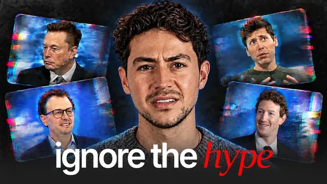

AI 뉴스 좀 끊으세요

원본 영상 보기 →
- 소수점 버전 업은 업무를 바꾸지 않아요
- 화제성 뒤에는 인센티브가 있습니다
- 도구 지식은 감가상각되고, 영업 능력은 복리로 쌓여요
한 줄 요약
AI 뉴스를 매일 따라가는 건 교육이 아니라 오락에 가깝고, 그 뉴스 대부분은 돈을 받고 부풀려진 거예요. Nick Saraev는 뉴스를 끊고, 필요한 걸 직접 검색해 배우고, 모델이 바뀌어도 가치가 떨어지지 않는 영업 같은 소프트 스킬에 집중하라고 말합니다.
전체 내용 정리
새 모델이 쏟아지지만 삶을 바꾸는 일은 거의 없어요
AI 뉴스는 모든 것을 모든 곳에서 동시에 다루고, 변화 속도는 줄어들 기미가 없습니다.
Nick이 꼽는 가장 큰 문제는 정보가 너무 많다는 점이에요. 몇 년 전만 해도 두세 달에 한 번 새 모델이 나왔고, 그 모델은 이전에 불가능했던 기능을 실제로 열어 줬습니다. 요즘은 4.1, 4.2처럼 소수점 단위 버전이 쏟아져요.
모델이 더 똑똑해진 건 맞습니다. 그런데 "이 모델이 0.1세대 전에는 못 하던 일을 지금 할 수 있는가, 내 업무 방식을 의미 있게 바꾸는가"라고 물으면, 답은 거의 항상 "아니오"라는 게 Nick의 판단이에요.
AI 뉴스는 정치 뉴스와 비슷해요
Nick은 AI 뉴스 소비를 정치 뉴스 소비에 비유합니다.
주변에는 누가 어떤 연설에서 무슨 말을 했는지 꿰고 있는 사람이 많죠. 그런데 그 정보가 휴게실 수다 외에 삶에 실질적인 영향을 준 경우는 드뭅니다. 정치가 삶에 영향을 주는 사례도 분명 있지만 예외일 뿐이고요.
AI는 본질적으로 자동화와 비슷해요. 기술로 공정의 인간 노동을 줄이는 겁니다. 비즈니스 관점에서 기술이 주는 결과는 둘 중 하나예요. 투입을 줄이며 산출을 늘리거나, 같은 투입으로 산출을 크게 늘리거나.
그런데 삶과 사업의 대부분 상황에서는 모든 걸 따라잡는 것보다 오히려 덜어내는 쪽이 더 필요합니다. 오락 자체가 나쁜 건 아니에요. 다만 접하는 AI 뉴스 대부분이 교육보다 오락이라는 점은 알고 있어야 합니다.
최신 기술을 가장 잘 아는 사람이 가장 덜 써요
Nick의 채널이나 상담 통화에는 이런 질문이 셀 수 없이 들어옵니다. "XYZ 3.2 터보 모델 어때요? LLM 최적화 TPU에서 돌릴 수 있나요?"
Nick은 속으로 이렇게 생각한다고 털어놔요. '돈 버느라 바빠서 그런 거 신경 쓸 겨를이 없다.'
최첨단 기술을 이론적으로 가장 잘 아는 사람이, 정작 그 기술을 의미 있게 쓰는 경우는 가장 적습니다.
경제적 성과에 기술이 어떻게 쓰이는지 보려면 다른 쪽을 봐야 해요. 몇 세대 전부터 기술 동향을 꾸준히 지켜본 경험 많은 사업가들이요. 이들은 이렇게 접근합니다. "두 달 동안 시장에서 검증해 보니 내 프로세스에 이 기술을 붙이면 생산성을 5% 정도 올릴 수 있겠다, 해보자."
Nick은 지난 6년간 AI가 새 가능성을 연 게 아니라 수익성을 높였을 뿐이고, 근본적으로 이전에 불가능했던 일이 지금 가능해진 건 없다고 봅니다.
돈을 많이 버는 사람은 신모델 이름도 몰라요
두 번째 문제는 최첨단 기술을 따라가는 게 경제적 이점을 준다는 믿음입니다.
Nick 주변을 보면 다른 모든 걸 희생하며 최신 기술에만 매달린 사람은, 한 가지에 집중한 사람보다 거의 항상 성과가 못했어요.
Nick이 아는 가장 부유한 사람들은 어떤 모델이 새로 나왔는지, 에이전트 25개를 조율하는 신기술 도구가 뭔지, 요즘 뜨는 AI SaaS가 뭔지 들어본 적도 없는 경우가 많습니다. 돈을 버는 한 가지 일에 점점 더 능숙해지고 있기 때문이에요.
언젠가 모델이 사람보다 훨씬 똑똑해져서 내 역할에 모델을 대신 넣는 게 이득인 시대가 오겠죠. 그런데 아직은 아니고, 그때가 오면 그때 삶을 바꾸면 된다는 입장입니다.
화제성 대부분은 돈으로 산 거예요
Nick은 새 도구나 모델을 둘러싼 화제성 대부분이 자연스럽게 생긴 게 아니라고 말합니다.
평범한 도구 하나를 홍보하는 데도 큰돈이 들어가요. Nick의 메일함에는 지난 한 달에만 500건이 넘는 협찬 제안이 들어왔습니다. 콘텐츠에 자연스럽게 녹여 대단한 일처럼 소개해 달라는 요청들이요.
시장은 가장 과장되고 대담한 주장을 내놓도록 설계돼 있어요. 크리에이터는 뉴스를 부풀리도록, 발표하는 회사는 큰 사건처럼 보이도록, 투자를 원하는 쪽은 과장하도록, 하드웨어 회사는 자사 하드웨어에서 돌아가는 LLM 데모를 과장하도록 유도됩니다. Nick은 자신도 클릭을 노린 자극적 콘텐츠를 만든 적이 있다고 인정해요.
그러니 '모두가 이 얘기를 하네'라는 느낌이 들 때, 그게 자발적인 관심인지 뒤에 돈이 있는지 의심해 보세요.
스크롤 대신 검색하고, 변하지 않는 걸 배우세요
뉴스를 따라가려는 노력을 멈추면 정말 하고 싶은 일, 경제적 가치를 만드는 일에 쓸 시간이 훨씬 늘어납니다.
배우고 싶은 게 있으면 유튜브 홈 피드나 틱톡 추천 페이지를 생각 없이 넘기지 마세요. 내가 알고 싶은 게 뭔지, 가장 빨리 배우는 방법이 뭔지 먼저 묻고 직접 검색하는 겁니다. 직접 찾은 정보가 내가 원하는 것과 훨씬 잘 맞고, 오래된 영상 중에도 숨은 보석이 많아요.
그리고 기술 발전과 무관하게 재현 가능한 스킬에 집중하라고 합니다. Nick이 늘 권하는 건 영업이에요.
특정 도구나 모델 사용법은 다음 기술이 나오면 가치가 사라집니다. 하지만 아이디어를 다른 사람에게 설득력 있게 전달하는 능력은 기술이 늘어날수록 더 값어치가 커져요. 아웃바운드 마케팅과, 한 번도 대화해 본 적 없는 낯선 사람을 유료 고객으로 만드는 법을 배우라는 겁니다.
GPT 5를 쓰든 GPT 7을 쓰든 GPT 99를 쓰든, 판매 능력의 가치는 변하지 않습니다.
결국 의도적으로 사는 태도예요
사람들은 역사상 어느 때보다 많은 자극과 데이터, 동기 부여 콘텐츠에 둘러싸여 삽니다.
Nick은 이게 꼭 나쁘진 않다고 해요. 다만 좋은 쪽으로 쓰려면 스스로를 인지하고 행동해야 하는데, 대부분은 그러지 못합니다.
누군가 이끌어 주기를 기다리지 말고 잠시 멈춰서 물어보세요. "나는 어디로 가고 싶은가, 왜 가고 싶은가, 지금 접하는 정보가 그 목적에 실제로 도움이 되는가."
핵심 인사이트
- 소수점 버전 업은 업무를 바꾸지 않아요: 새 모델 대부분은 "전에 못 하던 일"을 열어 주지 않습니다. 뉴스를 쫓는 시간이 실제 성과를 내는 시간을 잡아먹어요.
- 화제성 뒤에는 인센티브가 있습니다: 크리에이터, 발표 회사, 투자 유치 측, 하드웨어 회사 모두 과장할 이유가 있어요. "다들 이 얘기를 한다"는 신호를 곧이곧대로 믿으면 안 되는 이유입니다.
- 도구 지식은 감가상각되고, 영업 능력은 복리로 쌓여요: 특정 모델 사용법은 다음 모델이 나오면 가치가 사라지지만, 설득하고 파는 능력은 기술이 많아질수록 더 귀해집니다.
오늘 당장 해볼 것
- 지난 일주일간 본 AI 뉴스·신모델 소식 중 실제로 업무 방식을 바꾼 게 몇 개였는지 적어 보세요. 0~1개라면 AI 뉴스 채널과 뉴스레터 구독을 절반으로 줄여도 됩니다.
- 유튜브 홈 피드를 넘기는 대신, 오늘 내 업무에서 해결하고 싶은 문제 하나를 문장으로 적고 그 문장으로 직접 검색해 보세요. 튜토리얼 하나만 끝까지 보면 됩니다.
- 이번 주에 "처음 보는 사람에게 내 서비스를 설명하는 30초 멘트"를 써 보세요. 실제 상담이나 미팅에서 한 번 써 보고 반응을 기록하면 바로 다듬을 수 있습니다.